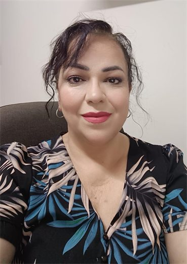

Dirección ECE
Responsable institucional de la Escuela de Ciencias de la Educación.
- Dr. Alejandro Javier Treviño Villarreal
Directorio institucional del CRECE y responsables por área.
El trabajo del CRECE integra dirección, coordinación y áreas especializadas para formación, calidad, comunicación, tecnología educativa, multimedia y publicaciones.
Responsable institucional de la Escuela de Ciencias de la Educación.

Coordinación del Centro de Recursos para la Enseñanza y Ciencia Educativa.

Diseño, gestión y acompañamiento de acciones formativas.
Seguimiento de criterios académicos y mejora de procesos.
Comunicación institucional y difusión de actividades.
Integración de recursos, plataformas y soluciones educativas.
Producción de materiales audiovisuales y recursos digitales.
Apoyo editorial, divulgación académica y publicaciones.
Esta sección concentra los nombres y áreas confirmadas para orientar la colaboración institucional.
Contactar al CRECE